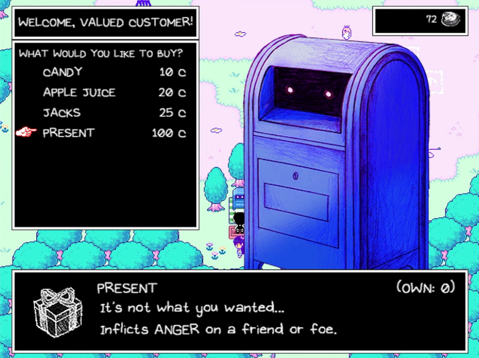

OMORI遊戲介紹
遊戲介紹 游戲的地圖 游戲的玩法 遊戲裡的世界 人物介紹 遊戲內容 其他 遊戲周邊販賣處
Omori
是由美國獨立工作室OMOCAT所開發的電子角色扮演遊戲。
據Omocat所創作的網路漫畫改編。
遊戲以焦慮和抑鬱等概念為主題，包含心理恐怖元素。
OMORI是一款由RPGMaker製作的，像素風+手繪風的，
以敘事和探索為導向的，帶有一定驚悚情節的RPG游戲。
其游戲世界非常豐富，劇情非常具有表現力和沖擊力。
世界設定
游戲的地圖:
游戲的地圖並不大，但是塞得很滿，到處都充滿了可以互動的東西。
在故事中，分別探索兩個世界，克服他們背後的恐懼並揭開其中的秘密。
此遊戲互動取決於玩家所做出的選擇，並因此產生多項結局
其中遊戲的回合制戰鬥系統會受角色情緒的異常狀態的影響。
游戲的玩法:
游戲的核心玩法是個JRPG——回合制，打怪，練級，等等。
像JRPG這種比較成熟的玩法想要做出創意是很難的，而這個游戲恰好就做到了。
游戲戰鬥系統最大的特點，就是情緒系統——普通的JRPG往往有元素相剋的設定(水克火，火克風，等等)，
而這個游戲並沒有元素設定，取而代之的是情緒：無論是玩家控制的角色，還是敵人都有自己的情緒。
情緒系統構成了這個游戲戰鬥系統的核心，雖然說小怪基本可以隨便打，但是幾乎每一個BOSS都需要玩家對情緒系統善加利用才可以擊敗。
遊戲裡的世界:
這個游戲是雙線敘事。
一條線是幻想世界，游戲的大部分流程都發生在這里。另一條線是現實世界，幻想世界的所有劇情都發生在現實世界的主角腦海里。
本作還是有很大特色的——這個游戲的心魔才是真正的心魔，而真正的心魔是不會有那麼容易被克服的。
主角與之戰鬥的敵人，是他自己心中無邊的黑暗。與其他相比游戲里的心理陰影，全都不足為懼，只有這個游戲中的心魔可以被稱之為真正的敵人
人物介紹
主角是一位黑白的小男孩，
和他彩色的朋友們，
在一個彩色的世界中冒險的故事。
游戲的畫風非常可愛，
游戲的劇情非常輕松有趣
但是這些都是表象，
游戲的內核是一個壓抑的，憂鬱的故事。

Hero
在幻想世界是對烘焙、清潔等家務工作
充滿熱情的15歲領袖，現實世界則是19歲的大學生。
在現實世界中仍保持著友善、熱心的性格，
也因其魅力而受到小鎮人們的欽佩。
對他遇到的任何人都相當冷靜和理解，甚至在遇到困難時試圖安慰他們。
過去似乎與Mari相戀，Mari的死令他陷入了嚴重的抑鬱情緒中並一度閉門不出，在因此和Kel產生爭吵後情況逐漸改善，
並試圖讓他的生活回到正軌，儘管每當他想起 MARI 的存在時就會非常情緒化。

Mari
在幻想世界是一位善良溫柔的15歲少女，
現實世界則已經去世，她的存在與死因則是遊戲最關鍵的真相。
雖然和朋友與Hero互動時有著頑皮的一面，
但性格實際非常完美主義，此外也相當關愛著弟弟Sunny。
即使在死後，她的精神形態仍然表現出對於Sunny的寬容，
她還試圖幫助Sunny原諒自己。儘管知道弟弟不小心殺死了自己，
但還是希望Sunny能繼續前進，無怨無悔地過完自己的人生

Basil
在幻想世界相對害羞和焦慮的12歲男孩，現實世界則是16歲的少年，
也是整個遊戲故事背後的推動力之一。
性格非常感性，在現實世界中似乎更加焦慮和敏感，
性格更加封閉，也非常害怕生活中的重大變化，
同時也是Aubrey的欺凌對象。
隨著遊戲進一步接近真相可知，
他是Mari謀殺案的相關證人，可以推斷出他因隱瞞Mari的死因從內疚到精神衰弱，玩家能根據選擇進一步影響該角色的結局。
 Omori
Omori
Sunny
玩家可操作角色，故事主角，一位沈默寡言，嚴肅的16歲少年。
小時曾是一位害羞但善良的男孩，
但隨後因姊姊Mari的死亡徹底切斷自己世界的聯繫，
隔絕在家中成為了蟄居族。
並逃避自幻想的「幻想世界（Headspace）」，
並通過另一個自我「Omori」在幻想世界中探險，
進而所面對背後所壓抑的真相。

Aubrey
在幻想世界是一位非常開朗，
總是樂於和朋友們一起玩耍的12歲小女孩，現實世界則是16歲的少女。
在現實世界中，由於她不解其他朋友對於Mari死亡的釋懷，
使她感到極度孤獨，性格也變得暴躁和暴力，
也成為小鎮的不良少年領袖，頭髮也染成了粉紅色。

Kel
在幻想世界是一位精力充沛，
性格有點粗魯的小男孩，現實世界則是16歲的少年。
現實世界中依舊保持著快樂的神態，
但顯得更加成熟和善解人意，
並他不斷嘗試幫助有需要的人，
這常常導致他有時做出輕率的選擇，
心中也希望希望與他的老朋友重新保持聯繫。
遊戲內容
- 第一次遊玩時會發現遊戲菜單並無特殊的改變但隨著遊戲的後續發展，會發現遊戲菜單跟者改變反應遊戲主角的心靈
- 這個游戲僅僅在戰鬥系統和技能系統上帶來了一個小小的改動就可以讓玩家體會到一種完全不同的戰鬥體驗。
與游戲的劇情完美結合在了一起，在部分劇情戰鬥中，這套戰鬥系統可以起到一種輔助敘事的功能。
比如說最終BOSS戰那炸裂的演出效果，很輕易就可以把玩家的情緒調動起來。
- 遊戲中會有回合制的戰鬥系統但在玩躲貓貓發現不見朋友不見後進入
第一次戰鬥時會發現其他人的血都扣光了但主角會鎖血，這是因為這是主角的幻想世界 黑白是幻想世界的存檔彩色是現實世界的存檔可以從圖片看出差異
這個游戲在可愛和溫馨下隱藏的猙獰面貌。但它真的非常擅長在人的意料之外給人來一下。
比起露骨的驚嚇來這個游戲更多是給人帶來一種壓抑感/不安感/悲傷感，甚至是絕望感。就算通關了，這種壓抑感也始終難以釋懷。

- 遊戲中的場景物品幾乎都是可以互動的，也讓遊戲本身除了主線支線外增加了豐富性和耐玩性，讓玩家可以在游戲的壓抑情緒中找到一點喘息的空間
- 照相簿是整個遊戲推動故事的道具。
Basil的性格非常感性，喜歡以照片記錄朋友們快樂的回憶也是照相簿的主人
在主線劇情中除了過場動畫也有利用尋找相來拼湊事情的真相(Mari的死因)
- 在絕大部分時候，OMORI只有一把武器，在他每天重新進入HEADSPACE時，
他拿著的SHINY KNIFE自動升級為KNIFE和DULL KNIFE。
在OMORI路線中HEADSPACE被重置後，他的刀最終變為RUSTY KNIFE。
RED KNIFE是唯一的例外，它在擊敗並寬恕ABBI後才能獲得，並會自動替換RUSTY KNIFE。
- 遊玩中會到找到需多英文字母兒字幕收集完後會進入黑色空間(幻想世界)裡面的畫面詭異又讓人不安，
與白色空間(幻想世界)不同這個世界有超多門而每個門都是一個詭異又讓人不安的空間，門共有20個。
其他
- 游戲的4個結局中，
一個GE，一個BE，兩個NE。
有個很良心的地方就在於GE是四個結局里最容易打出來的，而BE和GE在同一條線上，
只要讀一個檔就可以打出另外一個。
- 主要人物大約20位，而配角、小怪、NPC大約120位左右，對於一個RPG的游戲來說人物的出場和關聯就很重要，
游戲裡的角色並不是被打敗後後續就不見了，而是會在後續的發展繼續的與其他角色聯手來戰鬥
- 《OMORI》也部分融入了超現實主義理論
（致力於探索人類的潛意識心理，將現實觀念與本能、潛意識及夢的經驗相融合
展現人類深層心理中的形象世界，簡單來講就是通過夢境來展現心理狀態）
當我們開始遊戲時，會發現男主omori（男主名字與遊戲名一致）
身處一個四周漫無邊際的白色空間中，身邊只有一扇門、一個筆電、一盒紙巾、一本筆記、以及一隻貓。
- 遊戲流程中夢境與現實的不斷交替，更體現出夢境那不真實的美好。
如果說夢境多麽幸福，那麽現實就是多麽殘酷，多麽讓人想要逃避
我並不想玩現實部分，我只想玩夢境裡的內容”
如果作為玩家的你有產生一絲一毫類似的想法，
那你其實已經落入了作者的圈套之中
因為此時你就像是遊戲中的主角一樣，想要通過虛假的夢境來逃避現實問題。
- 《OMORI》的網站是互動是的網站
可以點畫面中的門進入會出現游戲中的一些沒有出現在遊戲畫面的畫面除了門以外，
上面的燈泡也是可以互動的點下去會出現游戲中的SOMETHING
遊戲周邊販賣處
版權所有 ©基礎HTML練習3109048012范曉莉